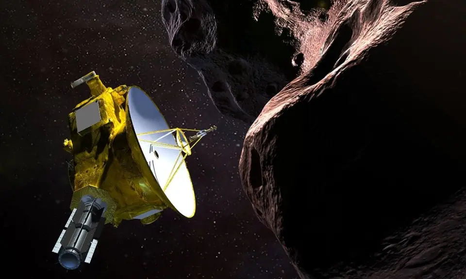
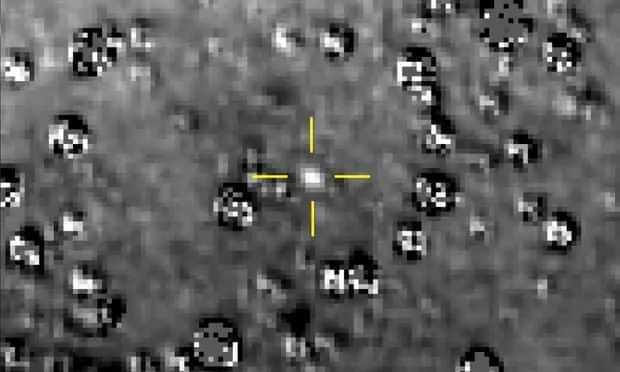
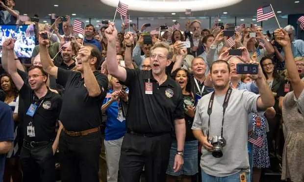

Articles ·
On 1 January 2019 the New Horizons probe will begin transmitting data from Ultima Thule, 4bn miles from Earth in the Kuiper belt. What will it find?

our billion miles from Earth, a swarm of little worlds circles the dark edge of our solar system. The sun is so remote from this place that it appears no brighter than a star. This is the Kuiper belt, a doughnut-shaped ring of icy objects that is one of the most mysterious – and one of the most scientifically intriguing – regions of space around our sun.
The belt is made up of rubble left over from the formation of the sun’s planets billions of years ago, fragments that are a fossil record of the solar system’s birth. For decades, researchers have dreamed of getting a close-up look at one but have been thwarted by the utter remoteness of the Kuiper belt.
But this sad state of scientific ignorance is about to come to an end. On 1 January, the US probe New Horizons – which has been hurtling away from the sun for the past 13 years – will sweep past Kuiper belt object 2014 MU69 and, for the next 24 hours, use its cameras, detectors and scanners to scrutinise this little world in detail. By the end of the probe’s encounter, an object that is currently no more than a dot in astronomers’ telescopes should be transformed into a world rich in astronomical and geological detail.
We expected to find that Pluto was a simple inactive world but in fact it turns out to be no less complex than Earth
Alan Stern
“We are going to find out what this object is made of,” says Alan Stern, the principal investigator of the New Horizons mission. “How was it was constructed? Does it have an atmosphere? Does it have rings? Who knows what we might find.”In the process, MU69 will become the most distant object that has ever been explored remotely by human beings. It should be a remarkable encounter – a point recognised by mission control staff who recently decided to give the little world a title that is more memorable than its current drab astronomical catalogue number. They have renamed it Ultima Thule – after the region that ancient geographers believed was the remotest in the inhabited world. (Both Greenland and Iceland are candidates for the original location of Ultima Thule.)
It will take less than 24 hours for New Horizons to whiz past Ultima Thule and survey it with its instruments on New Year’s Day. Then it will start to beam its findings back to Earth to provide scientists with that precious data about the early history of our solar system. Then, having completed its historic task, New Horizons will plunge further into deep space in the rough direction of the constellation Sagittarius.
“The crucial point is that everything is now going perfectly with New Horizons,” says Stern. “We have just made one correction to its current course and will have the opportunity to make three more before 1 January. However, I don’t know if these will be necessary – we are already very close to the correct trajectory that we need to follow.”
New Horizons was launched from Cape Canaveral in January 2006 and used a flyby of the giant planet Jupiter in February 2007 to increase its velocity to more than 30,000mph. For the next eight years it hurtled outwards from the sun towards its primary target: the dwarf planet Pluto and its five moons, Charon, Styx, Nix, Kerberos and Hydra.
The robot spacecraft eventually completed its 3bn-mile journey to Pluto and its moons on 14 July 2015, and began beaming back data to Earth, messages that took more than four hours to reach mission control even though this information was being transmitted at the speed of light. And the information revealed by these signals when they eventually reached Earth provided astronomers with a number of surprises.
Many had expected Pluto and its moons would be revealed to be icy, dead places. Instead New Horizons uncovered many signs of geological activity as well as evidence that ice has been flowing recently across Pluto’s surface. The planet had towering water-ice mountains and vast plains of frozen nitrogen, while a reddish-brown cap of material on Charon was found to be composed of organic molecules that could be important ingredients of life.
Pluto was also discovered to have a thin, blue atmosphere rich in nitrogen. For a world in such a remote orbit around the sun, the planet – and its moons – proved to be surprisingly energetic.
“We expected to find that Pluto was a simple inactive world but in fact it turns out to be no less complex than Earth or Mars,” says Stern. “We also found that it was geologically active and again we didn’t expect that. We thought Pluto would have lost its geothermal energy long ago, but that is not the case.”
However, it was the response of the public that most excited Stern. “The popular reaction to the probe’s discoveries – that is what got me. It was the first fly-by of a new planet to have taken place since the 80s and people were really enthusiastic about it. They were really gripped by the discoveries we made. The public is really interested in space exploration. And that has encouraged us.”
Having revealed the wonders of Pluto and its moons, New Horizons then continued on its path and headed into the Kuiper belt, an additional trip that would add a further 1bn miles to its travel history. The goal was considered to be justifiable given that objects in the belt could tell us a great deal about the solar system’s birth throes.

Studying these little worlds would be a very different affair from scrutinising Pluto or Charon, however. The former is about 1,470 miles in diameter, the latter is about 750. By contrast, New Horizons’s target – Ultima Thule – is probably only about 20 miles in diameter, which is typical for an object in the Kuiper belt. (The belt is named after the Dutch-American astronomer Gerard Kuiper, who proposed its existence in a paper in 1951.)
Ultima Thule was discovered in 2014 by astronomers who had been using the Hubble space telescope to sweep the Kuiper belt for suitable targets for New Horizons’s forthcoming rendezvous. A total of five candidate objects were pinpointed, with Ultima Thule emerging as the clear favourite. “It was the easiest Kuiper belt object for us to get to,” says Stern. “It is the one we can approach using the least amount of fuel and so maximise our reserves – which could be crucial in dealing with any unforeseen manoeuvres in the future.”
Intriguingly, the selection of Ultima Thule adds another first to New Horizons’s achievements. It will be the first object in astronomical history that will be studied by a spaceship that was launched long before that object itself was discovered.
Since Ultima Thule’s discovery, scientists have been trying to find out more about this tiny, utterly remote world as New Horizons speeds towards it. The Hubble space telescope has continued its surveys while astronomers have attempted to exploit stellar occultations – which occur when an object like Ultima Thule passes in front of a star and disturbs the light received from it on Earth.

From these observations, scientists believe Ultima Thule is either a single object that is about 20 miles in diameter or is made up of two objects swirling round each other with each component measuring 9 to 12 miles in diameter. It is even possible that Ultima Thule may have a moon or possibly several.
“Ultima Thule could have an atmosphere, rings or several moons,” says Stern. “We are certainly hoping for a lot because we uncovered so many surprises when we got to Pluto. However, we will have to wait until 1 January to discover the truth.”
Many key features about Ultima Thule should become clear to scientists when the first data from New Horizons reaches Earth next month. However, they will have a longer wait before they get the total picture – for it will take months to transmit all the information sent back by New Horizons after sweeps to within 2,200 miles of Ultima Thule in January.
The problem is that New Horizons is very, very far away and so its radio signals are extremely weak. And a weak signal means low data rates. As a result New Horizons can only transmit data at about 1 kilobit per second. And at that rate it will take more than a year to learn exactly what the probe discovers about Ultima Thule.
“We will gather about 50 gigabytes of information from New Horizons after its instruments have studied Ultima Thule,” says Stern. “That is roughly the same amount that we gathered from Pluto and its moons – and that took more than 16 months to be beamed back to Earth.” However, New Horizons is now 1bn miles further from Earth than it was when it passed Pluto three and a half years ago, and that means it will take even longer to beam back its data about Ultima Thule.
“I expect it will take around 20 months to get our data back this time,” says Stern. “That means that in September 2020 we should know all that we are going to learn about Ultima Thule. That might seem a bit of a wait. On the other hand, Ultima Thule is a fossil record from the earliest days of the solar system so I think we can wait just a little bit longer to find out about it.”
Ultima Thule is likely to remain the remotest object visited by a space probe for a very long time, unless Stern and his colleagues choose to break that record for themselves. They would do that by going on to explore yet another Kuiper belt object in the mid-2020s.
“Once we get all the data back from Ultima Thule we can start thinking about the next goal,” says Stern. “New Horizons has a nuclear battery that will provide the craft with another 20 years of electricity, so we could easily go on to another object. We will have the power to do that. It remains to be seen if there is popular backing for another encounter, however. In a way, it depends what we find at Ultima Thule.”
Migrated from the AUASS website archive as published, with the formatting tidied.